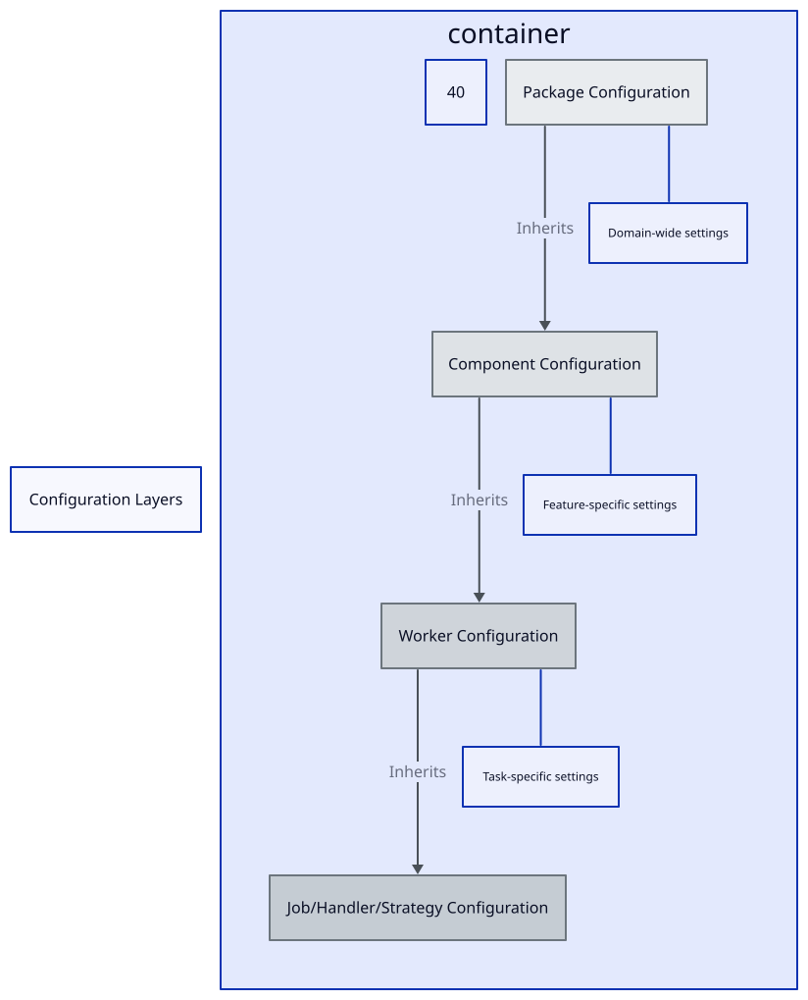

Configuration Layers in Derafu Backbone
This document explores how configuration cascades through the architectural layers in Derafu Backbone, providing a powerful and flexible way to configure your application.
- Configuration Hierarchy
- Accessing Configuration
- Configuration Inheritance Mechanism
- Best Practices for Configuration Management

Configuration Hierarchy
Derafu Backbone implements a hierarchical configuration system that follows the same structure as the architectural components. This cascade system allows for powerful customization while maintaining sensible defaults.
Package Configuration
At the top of the hierarchy is the Package configuration, which provides the foundation for all configuration within a domain:
# Example package configuration.
example_package:
options:
debug: false
cache_enabled: true
components:
example_component:
# Component-specific configuration.
another_component:
# Another component's configuration.
Package configuration is ideal for:
- Domain-wide settings that affect all components.
- Default values that components can override.
- Shared service configuration.
- Environment-specific settings for an entire domain.
- Feature flags that affect the entire package.
The Package configuration establishes the baseline for all contained components.
Component Configuration
The Component configuration provides more specific settings for a functional area within a package:
# Component configuration within a package.
example_package:
components:
example_component:
options:
timeout: 30
max_retries: 3
workers:
example_worker:
# Worker-specific configuration.
another_worker:
# Another worker's configuration.
Component configuration is appropriate for:
- Feature-specific settings.
- Overriding package defaults for a specific component.
- API keys or endpoints for external services used by the component.
- Component-specific validation rules or constraints.
- Logging or monitoring settings for a component.
Component configuration inherits from the package level but can override any setting as needed.
Worker Configuration
Worker configuration provides even more specific settings for individual workers within a component:
# Worker configuration within a component
example_package:
components:
example_component:
workers:
example_worker:
options:
batch_size: 100
processing_mode: "async"
jobs:
# Job-specific configuration
handlers:
# Handler-specific configuration
Worker configuration is useful for:
- Task-specific settings.
- Overriding component defaults for a specific worker.
- Performance tuning parameters.
- Feature flags for specific functionality.
- Worker-specific thresholds or limits.
Worker configuration inherits from both the package and component levels.
Job/Handler/Strategy Configuration
At the lowest level, individual jobs, handlers, and strategies can have their own configuration:
# Job configuration within a worker
example_package:
components:
example_component:
workers:
example_worker:
jobs:
example_job:
options:
validation_level: "strict"
timeout: 10
This level of configuration is ideal for:
- Operation-specific settings.
- Fine-grained control over individual operations.
- Feature flags for specific functionality.
- Operation-specific thresholds or limits.
Accessing Configuration
Derafu Backbone provides a consistent way to access configuration at any level through the ConfigurableInterface and the ConfigurableTrait:
// Inside a package, component, or worker.
$config = $this->getConfiguration();
// Accessing specific options.
$debug = $config->get('options.debug', false); // With default value.
$timeout = $config->get('options.timeout'); // Without default.
// Accessing nested configuration.
$workerConfig = $config->get('workers.example_worker');
The configuration system is designed to be:
- Type-safe: Configurations can be defined with schemas for validation.
- Environment-aware: Different configurations can be loaded based on the environment.
- Hierarchical: Configurations cascade from more general to more specific.
- Defaulted: Sensible defaults can be provided at any level.
Configuration Inheritance Mechanism
The key benefit of Backbone’s layered configuration is inheritance:
- Default Values: Each layer can provide default values that are used if not overridden.
- Selective Overrides: Lower levels can override specific settings without affecting others.
- Aggregation: Configuration is aggregated from all levels before being used.
For example, if you have these configurations:
# Package level.
example_package:
options:
debug: false
cache_enabled: true
timeout: 30
# Component level (in the same file).
example_package:
components:
example_component:
options:
timeout: 60
Then, when accessing configuration from within ExampleComponent:
$config = $this->getConfiguration();
$debug = $config->get('options.debug'); // false (inherited from package)
$cacheEnabled = $config->get('options.cache_enabled'); // true (inherited from package)
$timeout = $config->get('options.timeout'); // 60 (overridden at component level)
Best Practices for Configuration Management
When working with Backbone’s configuration layers:
- Define defaults at the highest appropriate level: Place configuration that applies broadly at the package level.
- Override only what’s necessary: Only override configuration when you need to change it.
- Be explicit about types and validation: Use configuration schemas to validate configuration.
- Use environment-specific configuration: Leverage environment variables and profiles for environment-specific settings.
- Document your configuration: Clearly document what configuration options are available and what they do.
- Keep sensitive information separate: Use environment variables or dedicated configuration stores for secrets.
By understanding and effectively using Backbone’s configuration layers, you can create flexible, configurable applications that are easy to adapt to different environments and use cases.